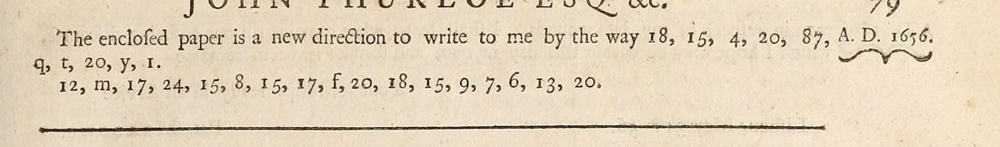

At a glanceNot solved · text not obtained
- The letter
- “An intercepted letter of du Gard in a letter to White”, Brussels, 10 June 1656. The writer thanks White for his letters and encloses “a new direction to write to me”.
- Where
- The original is in the Bodleian, MS Rawlinson A vol. xxxviii p. 769, not digitised. Printed by Thomas Birch, Thurloe State Papers (1742), vol. 5 pp. 78–79, in English translation from the French.
- The cipher
- Two lines, 27 signs: figures with the letters q, t, y, m and f mixed in. It is a cover address: a name and a place.
- How it was tried
- Every royalist and Commonwealth key of 1653–60 on Cryptiana was applied and scored. None gives a name.
- Still open
- The whole address. It is too short for a statistical attack, and the key is not online.
01 The letter
Thurloe’s office intercepted this letter from Brussels in June 1656 and Thomas Birch printed it in 1742 in English. The writer has received White’s letter of 14 April, brought by the footman of monsieur de Barrière (the Prince of Condé’s agent in London), and suspects that others were intercepted. Then: “The enclosed paper is a new direction to write to me by the way”, and the cipher. White is probably one of the White brothers, Richard, Ignatius or Andrew, whom Cryptiana discusses; du Gard is not identified.

This letter was one of four short pieces with no known decipherment in Birch’s volumes that Cryptiana lists together. They share only the printed source and each is in its own cipher: Beverning and Vande Perre to Boreel, 1653, Brussels to Copinger, 12 August 1656 and Waddall to “Vanyeare”, 22 August 1656 each have their own page.
02 The cipher and what was tried
As printed: 18, 15, 4, 20, 87, q, t, 20, y, 1. and 12, m, 17, 24, 15, 8, 15, 17, f, 20, 18, 15, 9, 7, 6, 13, 20. That is 27 signs, 19 of them distinct; 15 and 20 occur four times each. The letters among the figures may be plain or may be signs in their own right; at this length nothing settles it.
Every royalist and Commonwealth key of 1653–60 that Cryptiana publishes (Marshall 1656–58, Barwick–Hyde 1659–60, Stamford 1655, Butler 1656, the Charles II key intercepted in 1655, Kingston 1658, Westrope 1655, the Hague agent and Blake) was applied and scored with an English quadgram model. The best results are strings like “edaewQTeYa”: no name, no place.
03 What remains
- The address (27 signs): not read. Blocker: too short. No key online; the ciphers of the Bruges and Brussels royalist agents of 1656 would be in the Clarendon manuscripts, which are not online.
04 Sources
- Bodleian Library, MS Rawlinson A vol. xxxviii p. 769.
- T. Birch (ed.), A Collection of the State Papers of John Thurloe (London 1742), vol. 5 pp. 78–79: British History Online; page image in the Internet Archive scan.
- S. Tomokiyo, Cryptiana, Thurloe (the keys tried).
Ciphertext and notes: targets/dugard1656/; the key-trial script is in targets/thurloe/.